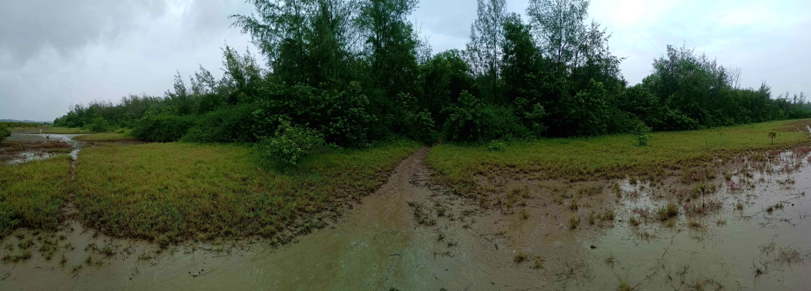

As I woke up at twilight, feeling no different than I did yesterday, or the day before, for that matter, I looked outside my window. It was still dark. Exactly how I like my morning coffee. And I thought it'd be wise to get quite a bit of caffeine in the system. It was an important day, after all. The day marks the threshold, and hopefully a twilight in my life. It was dark and it was rainy, I could hear the drops all around. For a moment I thought my plans for the day were laid to waste, and that I should probably go back to sleep. But I decided to go on. I wanted to do it today, even if it meant being drenched in the rain for long hours. Even if I had to stop mid-way and turn back. I wanted to do it. And my mind is so full of thoughts but that is nothing new. But today, I was going to listen to them. Today, I was going to listen to myself. Today, was the day of 'Threshold, Twilight and Thoughts'.
It has been 26 whole years, and a lot has a happened, especially in the last one year. And while I have had a lot of time to myself, I haven't used a lot of it to reflect. Even though I had a lot of voices in my head, I never stopped to listen. I was always too busy being busy. And when I look forward, it seems that life is only going to pick up the pace, and I am going to be running harder, getting more breathless. Ideally, I would like to, and will do all in my power to take charge, but life has a way of playing the ace on you when you aren't prepared for it. There is so much chaos in my head all the time. So many voices, so many thoughts. And before I can hold on to one, another one bumps into me and knocks me over. Thoughts come to me faster than I want them to, and relentlessly, day in and day out. I deliberately didn't choose 'can handle' because somewhere, I have always believed I have a gift. I don't know if having that kind of conception is called vain or self-aware. The line between the two is far too thin for me to mind with my rather inefficiently gathered words, but in all my understanding I mean it complete humility. I also realize that I have, for long, just suppressed my capabilities, to fit in sometimes, sometimes I allowed myself to be told of my limits. And I guess somewhere, a part of me wanted to live in full, unleash the curiosity into the world, and everything that I could do. But some images from the past, some wound within me, and lot of putrid feelings, in need of deep cleansing. I could keep going on about the baggage, but it is just as meaningless as the past itself, once the lessons of value have been extracted. But still that weight has been dragging me down, it feels. And where did that bring me? Right to the door of death.
Standing at the door of death, quite ironically, I found life. And I found purpose. It is never too late to die. But beyond that moment, it definitely was going to be too late to live. It is not that, the same thought didn't cross my mind in the more sane moments, but there also was the question of what life meant, anyway. There was the question of why to bother living. And I always found myself saying life wasn't worth it. Well, that may be so. But beyond that point, everything that I am, and could have been, would cease to exist. And was that worth it? One step inwards at this threshold, and I wouldn't know the answer to that question. Ever. Even though this was no time, nor an idea for which it'd be sensible, to be curious. But I was. Equally curious about what was beyond the door, if anything, and about what was to come on this side. And I found myself back at the same thought. It will never be too late to know what lies beyond the door. So what? The obvious resolution to the matter would be to step back. But I wondered if that was just the coward in me taking charge? How would I face myself and others upon return? Was there even a return? Is there ever a return? Time, after all never turns back, does it? It's only forward. And yet, I was stuck for years in certain moments. I carried a huge bag of resentment, for people, for circumstances, and above all for myself. And to add this moment that bag; wouldn't it be the silliest thing to do? Wouldn't it bring me back to this moment? Why bother with this cycle? The cycle of life and death. Where was the salvation? Where was enlightenment? Certainly not on the other side. Was it on this side though? All this time and all I could make of life was a meaningless existence? But in all honesty, didn't I choose this life? Didn't I create this life? Wasn't this a lie I was living, a character I was playing? Was there even any real reality, any more real than any other? If there was, wouldn't that be the answer to this perplexing mystery? Wouldn't that answer have an answer to the fundamental question of what life meant at all? I knew not. But the if there was a meaning, a reality, then I had to find it, to feast my soul on the glorious purpose, the grand scheme. There was no time to die. And if there wasn't a meaning, it was all just a big farce, would I really want to die playing this character? Did I play it well? Did I live a mark? Will I be remembered like Heath Ledger? Was the character worth dying for? What did I stand for? What legacy was I leaving behind? Who was I? Right! Who was I, indeed? Did I make my mark in the world? Did I have an impact? Wasn't that my quest? A child from a small town, with great gifts, running as hard as his two tiny legs would carry him. But what for? Because somewhere, he believed, he will find his place in the world, where people would look at him and there would be certain glitter in their eyes. I don't know what the child wanted. Was is respect? Or validation? Or love? Or attention? Aren't these complex words that the child couldn't have known? What did he want, then? Wait! Did he want anything at all? No, he didn't and isn't that why he could live in the present so easily? Isn't that why he felt happiness? Isn't that what everyone wants? To quench every thirst and every want? But will this ever end? There is always more to want. More to run after. And isn't that the source of all sorrow? The more I grew up, the more I wanted, and the more I suffered. And if wanting was sorrow, wasn't happiness truly within? And wouldn't that child want to live? To nurture his gifts into fruition? But isn't that want too? Was there an escape from the cycle of want? Isn't want a state of mind? An attachment? A scarcity? Isn't want to look at the future or the past? Isn't it really just as simple as looking at the present? Just being in the moment? Was I happy at this moment? Because standing at this threshold, there was no future to worry about, and no past to brood over. And it was at this moment that I realized that I felt an absurd, deep happiness. I felt elevated to a different existence. And I just wanted to relish this and to keep this going.
So, as it happened, I chose life over death. A life where I took charge, where I decided who I was, and most importantly,a life where I had let go of the past. But that is a messy process. It was as if somewhere along the years, the child built a cocoon around himself, physically and mentally. He needed to break free. Because he was who I really am. Everything else is just a farce. Everything that originates from a want, or isn't in the present moment, is not that child. But how do I do that from that outside without affecting the child? I could only do it by internally connecting to the child. And I didn't quite know how. It has been ticking inside me, ever since that remarkable evening. And that was about a month ago. As I approached the day of the threshold, that would send me from 25 into 26, I felt something in me start to shift. I could feel that child's slumber weakening. And I just had to take the opportunity to sit down and talk to him. As I try to break out of the self inflicted cocoon, I think I need to give this person, and all these 26 years, a proper closure within myself. I need to come to terms deeply that I cannot run away from these 26 years. That's just the life I have lived and I can't resent myself for it, if I am to live at all anymore. Even though they say it is only the physical form that dies, the soul lives on, I needed to kill off this rotting soul I picked up somewhere, without harming the physical form. At 26, I needed to be reborn. And I needed to do this intricately, in solitude and peace, somewhere, where I could listen to the child, where the child could listen to me, and somewhere, where the messy process could find a beauty I could remember it by. I needed to be in raw nature to be able to tap into my caveman instincts, the site of my primal existence, and only then could I really talk to that child. I needed to get away from the city, somewhere I could get lost in my own mind and not have to stop, while around me, a beautiful symphony was played out by nature, a perfect backdrop to a twilight at the threshold. So I looked for a place to suit what I sought. I decided to set out early morning today.
I wanted to feel free really, so I decided not to carry anything. I just had the clothes on my body, a tee and a pair of shorts, a pair of clogs, and a watch. I took a pair of shades (I can't open my eyes in the sun) and a hair band (I have long hairs). In one pocket I had my phone, in the other wallet and house keys, and in my hand I had a disposable water bottle. And I felt constant nag in my mind to take this or that along, mostly my laptop, or my journal, or my an extra pair of clothes, a towel, some food, a book perhaps, my headphones. I couldn't help but notice how I had added so much complexity to life. That child who I was deep down, and who I was chasing, wouldn't have cared for any of that. And these seemingly inconsequential extra burden, I figured, is what drives the child away. I was also carrying very minimal cash. This I did on purpose, because, I felt, somewhere down the line, I started caring too much about the money, believing that money will get me out of any situation. And it would, but that isn't what I was looking for. To find that child, I figured, I would have to strip away all complexity of life and connect to the primal existence that I was. With that in mind, I left home. The rain had subsided, but the clouds were still there. I took a bus to the train station, and got on the train. All this while, there was a feeling lurking in the backyard of my mind, perhaps, hidden due to the presence of the adrenaline induced thrill. But as I sat down inside the train, the thrill subsided, because I think, I had nothing to do for about 3 hours. And taking the opportunity, the fear made it's presence felt. But it was nothing I hadn't seen before, so I paid no heed. At this point, I really started missing the shiny toys of the modern life, my headphones, or the laptop, or a book or anything I could get myself lost in. It was comfortable. But as I peeped in deeper, I was just trying to run away from the voice in my head - from the voice of myself. How did this happen? And when? As I grew up, I saw people around me, busy being busy, doing something or the other, ignorant as to what end. And I just wanted to be like them. I wanted to fit in. So I picked up the traits, the ears got covered with headphones, my inner voice got suppressed by someone singing or chit-chatting or something. I got too addicted to entertainment. And probably, entertainment was a very intoxicating drug. One gets hooked, and then can't get rid of it, and the process, gets further and further away from themselves. As some time passed, I felt a strong urge to do something to fill the void I was feeling. I was itching to talk to one of the people sitting around me. But I did not. There was a reason I was here today - alone, almost naked, and away from everything that had any familiarity with the person I was - I needed to talk to myself. And with some time, I started getting comfortable with the emptiness I was feeling, and soon the space was occupied by someone in my head talking to me - that voice sounded like mine. I was starting to talk to myself, barely and faintly.
As I went further away from the city, the buildings got shorter, the designs of them got simpler, and slowly, more space started creeping in between buildings. In some time, buildings were a rare occurrence. The myriad colors, and the monotonous greys, which as contradictory as it sounds, that exist together and define the cityscape, was slowly giving way to more green, and soon as far the eyes could see, it was green. Either in the form of short paddy farms, or dense forestation. In the hindsight, I was so lost in it, I wasn't missing any of my shiny toys. I felt fulfilled. And that begs a big question. How much do we humans really need? And how much of our running around is just futile to the core? In that moment I felt I had everything I needed. And soon, I saw a rather big factory, and somehow I was reminded what I had left behind. I could appreciate more what I had just experienced, and while it is easy to say that humans are a rotten species, as a matter of fact, I wrote that very line in the note I left behind as I went to end my ordeal, I wondered was it all so bad? Didn't this factory here symbolize who we are. The very reason I could go on this trip? And being a scientist (okay, wannabe), wasn't this precisely what I stood up for? And if it was all that simple, why did the stone age man have to hit rocks? Or polish round rocks? Or do anything at all? Wasn't the defining trait of the human species, a thirst for answers, for knowledge, for growth? A quest to become greater than who we are? And we did come a long way. But as it goes, all things must have a price to pay. Nothing is absolutely free. Even the social media we use for free, actually costs us our freedom, and our individuality, in terms of decisions and opinions. Nothing is really free. And this madness, the human species is consumed with, is the price for the realization of our destiny as a species. The curse of the human race is to be able to to do anything and yet be able to do nothing. For every power we make our, we create a power that we can't even dream of standing up to. For every mystery we solve, we create a paradox, that we cannot begin to probe. Our very power is our curse. As we all must have heard at least once; 'With great power comes great responsibility'. And that is where, I believe, the redemption lies. We have used our power, to the very fullest. But have we been responsible enough? Have we been responsible for the effects our answers will lead to? Deep down I believe we all know the answer. But it is easy to sit and say that the inventors of the nuclear bomb were in the wrong. Responsibility is not a species job. It is an individual job. I believe, people sitting in the comfort of an air conditioner have not much place to criticize the people who commute to the office with cars every day, and preach about global warming. Electricity is a great invention. It is a great power. It almost elevates us to the position of God on the planet. Using it we have probed the surface of the Moon and the Mars, and the very depths of the vast oceans. But it is supposed to be our responsibility to use it wisely and cautiously. And to use it to suppress the natural cycle of seasons solely for momentary comfort is not responsible enough. Likewise, it is an unspeakably great power to be able to go to the space, but to go to the space, in the tourism, purely to make a display of one's wealth, in the nature of the value if which I would not go at this point, I wonder if it could be called judicious use of power in any sanity. And that's the thing, we could go on saying this and that is the problem, but that would not lead us anywhere. The only way out of this is within oneself. It's all personal responsibility. And that is why I was on this trip, I got reminded.
Moving on, I saw lotus plantations, swampy patches, covered in flat, green, waxy sheet of leaves, with an ample outcrop of stalks on which sat buds, or rarely, a lotus in full bloom. And in some patches, the stalks were thinner, and the buds smaller, and on top of some stalks sat water lilies, white, small and pretty. And even though I knew all my life that is what lotus and water lilies look like, and had seen quite a few all these years, this time it felt different. I remembered the facts but I had forgotten the feeling. The beauty of the droplets of pearl on the green abode, shimmering under the sun, now starting to glow in some might, piercing the clouds. It was mystical to say the least. As I looked at it, I felt the same joy that a child would have felt. Where did I lose this feeling? Who cared to find the answers! I found myself a little pocket of joy. And as I looked at it, I couldn't help but notice, where there were two or three blooming lotus in each patch, water lilies were almost all in bloom. And in some patches, there were, bigger lilies, and these were lessen in number than the smaller ones. And it just spoke to me. I remember an age old saying. Excellence has a price. The better you want to be, the more you need to pay. And not everyone will always do that. And that's just how it is. While there is grace in being wherever one stands, for one to bloom to the level rarity, one must pay hefty prices. There is no shortcut. Because if there was, everyone would have taken it, and there would be no rarity left. I had known this. But this was not some book on productivity. This was natural law. And if this seems a regular thing to see, and the profoundness I am trying to imply in inflated, I saw something more bizarre. At some spot, I saw a dried up skeleton of a tree. A crow came flying by and perched on a high branch. And cawed, once. Then it turned its head around to take a survey of the area. There was nothing remarkable about this whole sequence but I got so mesmerized, I found myself almost at the verge of crying. I had never seen something so ethereal and yet so beautiful, but most importantly, there was nothing that I could point out, for the beauty to belong to. The whole moment was beautiful as it was, in it's entirety. Maybe it was the green in the backdrop. Maybe it was all in my head. But why did it matter! It was something I would not forget for a long time to come. I saw my train run over bridges, with rivers flowing underneath. I had seen this scene far too often. And it always got to me. The insane proportions of the elements involved. The hollow, reverberating, echo of the rhythmic humdrum of the train running over the steel construct. And the sheer brilliance of human minds to have accomplished something so great.
At some point, I caught a glimpse of something called kash phool (Saccharum spontaneum). It is some flower that resembles a white tuft of fur like the tail of some animal like fox. Every single time I see this thing, I flashback to that one fateful day in my childhood that would form a core value I carry for the rest of my life. I was in school, sitting in my classroom. It was the English class. I do not remember which class I was in at that time. I do not remember who the teacher was. I do not remember what was going on in the class at that time. Because my eyes were so focused on something that no other senses picked up anything, and my mind was so lost processing what I was feeling, it couldn't process anything else. In the textbook open in front of me was an illustration - an artist's impression this picture you see to the right. I had just learned that it was a scene from a Bengali movie called Pather Panchali by some director called Satyajit Ray. And I was mesmerized by the scene. It was so simple. And it moved me almost to tears. I did not know whether I was happy or sad. I was something between 8-10 at that time, and it was probably the first time I was feeling this. An emotion this deep. I did not even know how to word what I felt back then. But in retrospect, I believe, there was a persisting beauty to it. The majesty of the kash phool. The evident awe that the children felt at what is probably their first encounter with a train. The train itself, merely a silhouette again the backdrop of a clear sky, with prominent black soot - very much in contrast to the simple, rustic, whiteness of the scene otherwise. The scene speaks awe, adventure, joy, purity of the child's mind and the human life. I could feel the gentle breeze that swayed the stalk of the plants. I could feel the kash rubbing against the skin of the children running towards the train in their own ecstatic trance, the uncaring speed at which the train is going about the path destined for it. I could almost hear the whistle and the mechanical buzz and the humdrum of the train. The scene was an embodiment of freedom. The way, in all directions there nothing to be seen, except for nature and the elements of the narrative, no houses, or other humans, or even the details of the train, it almost screams how free the children must be feeling at that moment. And I couldn't take my eyes off the scene. I found something I could carry as my own for the years to come. At that time, I didn't know anything about Satyajit Ray, or the bengali culture. I grew up to learn a little more than I did back then and the scene has only grown more impactful. And every time I saw kash, I'd go back to that scene and that scene kept connecting me to that child I used to be. I grew up to learn that Satyajit Ray is one of the greatest directors to have ever been, especially, from a country that was still recovering from the imperial subjugation of the british. He went on to represent India and Indian art. He became one of the numerous icons of bengali forerunners ushering in a new era for India. He, along with these other bengalis, left a dense fog of cultural legacy. And the very kash phool is a symbol of bengali culture. It populates the fields of bengal around the onset of autumn, which marks the arrival of the the greatest symbol of bengalis, and in many ways the spirit of India, Durga Puja. It's a 10 day festivity observed in various ways in various cultures, but bengalis, they identify by it. It's much less a religious festivity for them, and more like a carnival. A 10 day party. Well, the later 5 days are the real party. Imagine Christmas for 5 days back to back if you are unfamiliar to the idea. And the same kash finds it's prominent presence in that scene, where one of the children is named Durga. And this entire fact just adds to the importance for this scene. And that reminded me, sitting in that train, that it was the same time of the year. Durga Puja was coming. This was the season of culture, and this was the season of legacy.
I reached the destination station, in some hours. As I got down from the train, I saw a sparse fog on the platform. I looked at the sky. It was still cloudy. The feel betrayed the time of the day. I walked out of the stations. There were a lot of people who got off the train with me. They were all headed to a vacation spot. But that wasn't where I was going. That was too many people for what I wanted. And I started walking down my own path. And I was alone, a bit too uncomfortably alone. The fear, now, started thumping loud in my chest. Was I doing the right thing? Was I going the right way? Why was no one going that way? What if something went wrong? But I kept putting one foot in front of the other and soon the fear didn't matter. I was being stubborn about this. I had to get over my fears and my limitations. I had to add this to the set of my experiences. I kept moving. Around me was what could at best be called a village where urbanization had barely knocked over a few stones in the last couple of years. It was blissfully peaceful. There was no one on the road, except, occasionally, a few locals going about their day. The houses were small and the air smelled or raw earth and moss and the faint mist falling from the clouds only added to the contrast from the city-life. The rustic atmosphere started sinking into me. I was feeling a little relaxed. Where there was a tornado of questions before, now I found a spark of courage. What could go wrong? I can always just turn back and go home. Maybe, this day won't go as I hoped it would, but it will still be a worthwhile experience, I'll learn something new either way it went. And above all I was safe. It was just the adrenaline, the primal fear of the new and the unknown that made me uncomfortable. And I needed to learn to be stronger than that. I needed to learn to go right into the heart of that kind of phony discomfort, because that is where growth lies. That child I was chasing would not even have felt this fear. He would have rushed straight in. While it is good that growing up one learns various things to make more informed decisions than a child, that is where our fears come from too. I needed to find the sweet spot where I could use all the experience of growing up to make better decisions but not let fear plague my decisions. I went on to talk to a few locals, asked for directions, ate at a local street-side shack, used local conveyance. While in the local market, I saw food and I thought maybe I should carry some with me, but I rejected the idea in order to keep my hands free. And so, I eventually got off the last conveyance.
Standing where I got off the conveyance, I looked around. Behind me was a road and in front of me it ended and gave way to a mud ledge, which led towards the woods. I was finally at the threshold of human civilization. Beyond this point it was nature. Raw and un-ornate. I felt a longing in my heart. As if a part of me just wanted to run into it and get lost, never to found again. I felt like a wild animal. This felt more like home than the city I left behind. For a few moments, I couldn't take my eyes off as if I was a teenager who has just seen someone for the first time and now had someone to call a high-school crush. In some time, I could tell myself, I will be going in soon and got back to my survey of the surrounding. To the either side of the road, there were a few houses, amply spaced, behind me, and for a little distance in the front. Beyond that point, there was a large expanse of wooden grid, on both sides of the mud ledge. Beyond the grid there were shallow basins of muddy water carved out in mud. I saw a few locals busy in their work, who took time out of their work to study me carefully, which told me visitors was not a common occurrence in these parts. Good for me. The sky was still grey and overcast. It might rain. But that's okay. I started walking down the path. I felt fear resurfacing. That was good. It signified that my limits were being stretched. I was experiencing a new territory of growth. As I neared the wooden grid, I saw it was layered with skewered fishes, meant to be sun dried. And there was a heavy stench of fish in the air. This was a fishing village after all. I did see a couple of fisheries on my way. I kept walking further and the mud on the ledge got softer at places, and my feet were sinking. It was due to the rain probably. I sensed discomfort in me. I started walking cautiously to avoid the softer parts. I reached a wooden bridge over a narrow and shallow brook, likely man-made. Each edge of the brook was populated with mudfish, and shells, some of which showed occasional movement. After the bridge, there was flat ground, slightly swampy, layered with some vegetation. I stood here for a moment. I let in, in its fullness what my ears were picking up. Strong, relentless howling. Of the wind. Beyond the woods. I focused on the sound harder. I could hear the waves. I felt, a bit relieved. The day was not wasted. I was at the right place. There was waters beyond the woods. Vast, endless expanse of water. And just as I was starting to feel the elation, fear returned. And this time it meant business. I knew it. But it was still weak, I kept walking. I noticed that the ground was ridden with tiny holes. I knew what this meant. Crabs. This was crab territory, and right I was. I started seeing tiny crabs. Some red, some so laden with mud, I couldn't tell whether they were grey in color it was just the mud. My mind flashed back to my childhood, and I imagined myself taking out a poke-ball from my pocket and throwing it at one red crab, and then after I caught it, bringing it out and saying it out loud, 'Krabby, I choose you!', in that familiar tone, you'd know if you grew up in the late 90's or early 00's. But amidst all this, my eyes caught a tiny one with a beautiful yellow, green color. This was the first time I had seen one of this kind. I squatted down and took a closer look. Soon it went about it's business and I got up and moved along my path. There were puddles of water. I tried my best to avoid them. By the time I crossed this patch of marshy crab city that stood between me and the woods, the clogs under my feet were laden with mud. They were literally heavy. I looked up to what might be called the doorway into the world of magic. Images of elves, druids, dragons, spear carrying horsemen, glorious wars of good versus evil, and what not raced through my mind. I smiled to myself. Even though I didn't see myself smiling, knowing that smiles had become a rare glace of the moon in the cloud laden sky, I could tell, it must be pretty good to look at. I was feeling closer to the child I was looking for.
In front of me was a narrow trail that led into the woods, and on either side was a dense expanse of woods as far as the eyes could see, and further beyond, I am sure. Wouldn't it be amazing to be here for the rest of my life? And just as that thought passed my mind, I realized the gravity of it. The entire human race started here. And that eventually led to where we are today. It was like I traveled back in time. And I found it amusing how humans want to fly away to some distant future when they can spread their wings, and when their wings are clipped, they want to run back to some forgotten past. Just how did we manage to make our present so unbearable? How the mighty have fallen! I would love to sit and indulge in rhetorics about the doom of the human species, as I soaked in the scene,but the woods pulled me, the waves called me, and into the opening I walked. And just a few steps in and this felt like a different world altogether. The air smelled different. The smell of fishes subsided. The smell of moss and ferns and crushed grass and damp soil and wood was strong in the atmosphere. If not for the sound coming from beyond the rather thin green curtain, it was impossible to tell what was waiting ahead. The soundscape changed from an eerie silence, broken by occasional human voice, or some vehicle's horn to prominent forest sound, the periodic ticking of insects, the rustling of leaves and my own footsteps, all of it over the backdrop of the sea. On either side of the trail the flora was so dense that I could barely see beyond a few layers of trees, and an end was not in sight. My fears were pretty strong by now. What if I got lost? What dangers lurked in this natural territory, undisciplined by human hands, I wondered. For a moment my feet froze. I wanted to turn back and run away. I could feel the tremors of my heartbeat at my fingertips. I guess I was sweating. There was chill crawling not just down my spine as they, but all over my skin. I guess I also got goosebumps. I was really scared. I wanted to scream in fear. I was like a child caught in the dark. I would have run away, if not for the fact that I knew this would happen. I saw this coming miles away. And I was committed to facing it. That was the very purpose of this trip, I reminded myself. There was no real reason to be so scared. It was just the fear of unknown, a primal instinct, a limitation at times, that I needed to surpass. I had to grow beyond this. I had to grow up into a child. I reminded myself. All the pep-talk didn't help. My legs stayed frozen. I stood there. And I looked back to check if someone was watching, and laughing at my pathetic state. There was no one. I didn't if this was better or worse. Was I subconsciously looking for someone to rely on to get rid of my paralysis? No. I had to do it on my own. I had to find courage in me. The courage to face my fears. I stood there, unmoving for a little while longer, took a few deep breaths and looked around like a total idiot. I saved the location pin, just in case I got lost. Now I had nothing more to do. Except moving forward. And I just let my mind fill up with awe. I tried to notice the smallest details of what was around me. I saw the slipper someone probably lost to the sea which the sea then returned to no one in particular, which then somehow found its way here. I noticed those hoof-marks on the ground, probably by some local cows that regularly go into the woods to get their meals. I noticed a relatively deeper, putrid puddle right in front of my feet, I noticed the trampled grass and disturbed mud ground around the puddle. And slowly I let my gaze shift further and further from where I stood. And eventually, when I reached the limit of my vision, I took one step ahead, dodging the puddle. A little more details popped into my field of vision. And then the next step. And I found myself moving, slowly, carefully, with the weight of fear still in my heart. Soon, my eyes got stuck to the sight of the opening and beyond it, the first sight of the seamless expanse of water. I stood still for a moment and gave myself a pat on the back. I did it. I came this far. I was at the sea.
As I looked out of the window, to the fields running by, I saw houses get more frequent and taller and soon, it was the all too familiar scene of human settlement. And I didn't pay much heed to it. Slowly houses gave way to fields again, and yet again, fields gave way to houses. And I realized this periodic nature was something the universe seemed to love. And it seemed that is where sustainability hid. Just as a long journey is best carried in laps of progress and periods of rest. It was such a simple idea, that even though I had it within me, I never stopped to think about it.